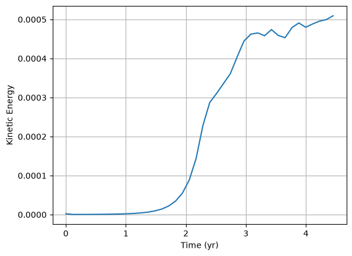
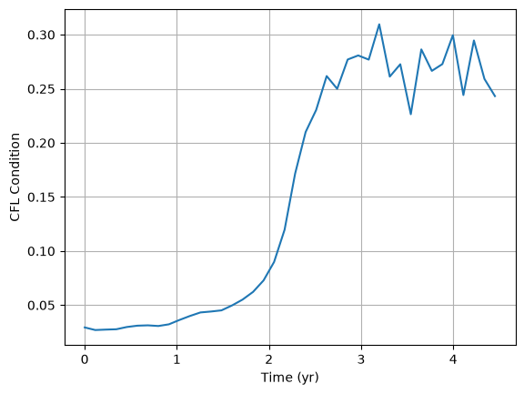
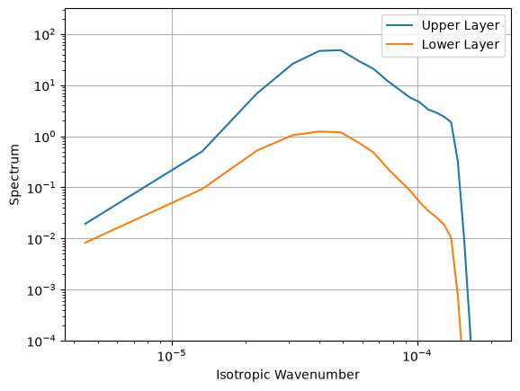
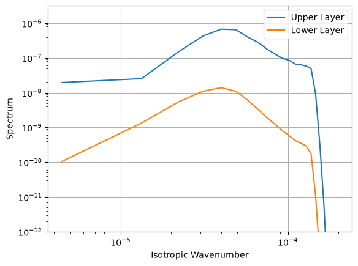

Diagnostics
This page presents several examples illustrating the use of diagnostic
routines included in this package. The available functions are
included in the pyqg_jax.diagnostics module.
%env JAX_ENABLE_X64=True
import functools
import jax
import jax.numpy as jnp
import matplotlib.pyplot as plt
import powerpax
import pyqg_jax
env: JAX_ENABLE_X64=True
We will illustrate the use of these routines on an sample trajectory.
To begin we construct a QGModel and
produce an initial state.
stepped_model = pyqg_jax.steppers.SteppedModel(
model=pyqg_jax.qg_model.QGModel(
nx=64,
ny=64,
),
stepper=pyqg_jax.steppers.AB3Stepper(dt=14400.0),
)
stepper_state = stepped_model.create_initial_state(
jax.random.key(0)
)
Next, we produce the trajectory. To reduce the required memory we will
not keep each step. Instead we will use powerpax.sliced_scan()
to subsample them keeping states only at regular intervals. We also
collect the time for each step for use in plotting.
@functools.partial(
jax.jit,
static_argnames=["num_steps", "start", "stride"]
)
def roll_out_state(init_state, num_steps, start, stride):
def loop_fn(carry, _x):
current_state = carry
next_state = stepped_model.step_model(current_state)
return next_state, (next_state.state, next_state.t)
_, (traj, t) = powerpax.sliced_scan(
loop_fn,
init=init_state,
xs=None,
length=num_steps,
start=start,
step=stride,
)
return traj, t
traj, t = roll_out_state(
stepper_state, num_steps=10000, start=0, stride=250
)
traj
PseudoSpectralState(qh=c64[40,2,64,33])
Note that the trajectory has a leading dimension for the steps just as in Basic Time Stepping.
Total Kinetic Energy
The function pyqg_jax.diagnostics.total_ke() can be used to
calculate the total kinetic energy in a particular state (see the
function’s documentation for information on scaling the value to
reflect a particular density).
The provided function operates only on one state at a time so here we
use powerpax.chunked_vmap() to vectorize it across several
states at once. This function is used to limit the number of steps
computed in parallel to reduce peak memory use in cases of a very long
trajectory. The value of chunk_size should be configured to balance
performance on GPUs against the memory required for the intermediate
buffers. Alternatively jax.vmap() could also be used to compute
the diagnostic across steps.
def compute_ke(state, model):
full_state = model.get_full_state(state)
return pyqg_jax.diagnostics.total_ke(full_state, model.get_grid())
@jax.jit
def vectorized_ke(traj, model):
return powerpax.chunked_vmap(
functools.partial(compute_ke, model=model), chunk_size=100
)(traj)
traj_ke = vectorized_ke(traj, stepped_model.model)
Finally we can plot the kinetic energy for each simulation step against the simulation time in years.
plt.plot(t / 31536000, traj_ke)
plt.xlabel("Time (yr)")
plt.ylabel("Kinetic Energy")
plt.grid()

CFL Condition
The function pyqg_jax.diagnostics.cfl() computes the
CFL
condition value of a particular step at each location in the grid. The
sample function below vectorizes it across several steps (with
chunked_vmap()). The code below also demonstrates
reporting the highest CFL value for a given step using jnp.max.
def compute_cfl(state, model, dt):
full_state = model.get_full_state(state)
cfl = pyqg_jax.diagnostics.cfl(
full_state=full_state,
grid=model.get_grid(),
ubg=model.Ubg,
dt=dt,
)
return jnp.max(cfl)
@jax.jit
def vectorized_cfl(traj, stepped_model):
return powerpax.chunked_vmap(
functools.partial(
compute_cfl, model=stepped_model.model, dt=stepped_model.stepper.dt
),
chunk_size=100,
)(traj)
traj_cfl = vectorized_cfl(traj, stepped_model)
Finally, we plot the CFL values for each step.
plt.plot(t / 31536000, traj_cfl)
plt.xlabel("Time (yr)")
plt.ylabel("CFL Condition")
plt.grid()

Kinetic Energy Spectrum
The function pyqg_jax.diagnostics.ke_spec_vals() produces an
array per time step which can be averaged over a trajectory and
processed into an isotropic spectrum with
pyqg_jax.diagnostics.calc_ispec(). The code below demonstrates
this processing.
def compute_ke_spec_vals(state, model):
full_state = model.get_full_state(state)
ke_spec_vals = pyqg_jax.diagnostics.ke_spec_vals(
full_state=full_state,
grid=model.get_grid(),
)
return ke_spec_vals
@jax.jit
def vectorized_ke_spec(traj, model):
traj_ke_spec_vals = powerpax.chunked_vmap(
functools.partial(compute_ke_spec_vals, model=model),
chunk_size=100,
)(traj)
ke_spec_vals = jnp.mean(traj_ke_spec_vals, axis=0)
ispec = pyqg_jax.diagnostics.calc_ispec(ke_spec_vals, model.get_grid())
kr, keep = pyqg_jax.diagnostics.ispec_grid(model.get_grid())
return ispec, kr, keep
traj_ke_spec, kr, keep = vectorized_ke_spec(traj, stepped_model.model)
Finally we plot the resulting spectrum, one spectrum for each layer.
Note the use of the keep value to slice the spectrum values before
plotting.
for layer, name in enumerate(["Upper", "Lower"]):
plt.loglog(kr[:keep], traj_ke_spec[layer, :keep], label=f"{name} Layer")
plt.xlabel("Isotropic Wavenumber")
plt.ylabel("Spectrum")
plt.ylim(10**-4, 10**2.5)
plt.legend()
plt.grid()

Enstrophy Spectrum
The function pyqg_jax.diagnostics.ens_spec_vals() produces an
array per time step which can be averaged over a trajectory and
processed into a spectrum with
pyqg_jax.diagnostics.calc_ispec(). The code below demonstrates
this.
def compute_ens_spec_vals(state, model):
full_state = model.get_full_state(state)
ens_spec_vals = pyqg_jax.diagnostics.ens_spec_vals(
full_state=full_state,
grid=model.get_grid(),
)
return ens_spec_vals
@jax.jit
def vectorized_ens_spec(traj, model):
traj_ens_spec_vals = powerpax.chunked_vmap(
functools.partial(compute_ens_spec_vals, model=model),
chunk_size=100,
)(traj)
ens_spec_vals = jnp.mean(traj_ens_spec_vals, axis=0)
ispec = pyqg_jax.diagnostics.calc_ispec(ens_spec_vals, model.get_grid())
kr, keep = pyqg_jax.diagnostics.ispec_grid(model.get_grid())
return ispec, kr, keep
traj_ens_spec, kr, keep = vectorized_ens_spec(traj, stepped_model.model)
Next, we plot the spectrum computed above. Note again the use of the
keep value to slice the spectra before plotting.
for layer, name in enumerate(["Upper", "Lower"]):
plt.loglog(kr[:keep], traj_ens_spec[layer, :keep], label=f"{name} Layer")
plt.xlabel("Isotropic Wavenumber")
plt.ylabel("Spectrum")
plt.ylim(10**-12, 10**-5.5)
plt.legend()
plt.grid()
